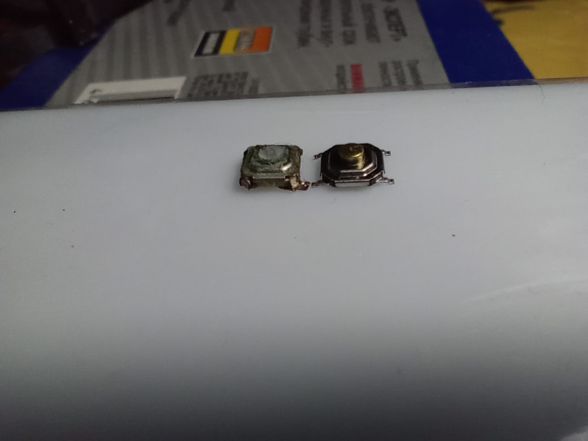

2025-12-19
01:02
Сегодня ремонтировал зубную щётку (Oral-B Braun).
Перестала нажиматься тактовая кнопка.
Сам ремонт показывать не буду — там всё пошло криво. Оторвал дорожку, пришлось восстанавливать.
Кнопку поставил из китайского набора, сколько проживёт — не знаю.
Интересно, что оригинальная кнопка низкопрофильная — почти вровень с площадкой.
#repair

09:41
https://habr.com/ru/companies/timeweb/articles/787328/
Статейка про настройку среды для работы с STM32 под linux
Я уже забыл, что конкретно ставил
Плюс дебаггер я так и не настраивал
#stm32 #linux